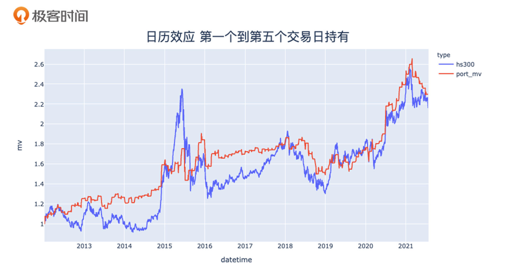
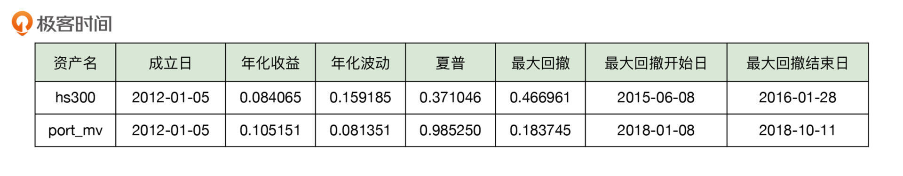
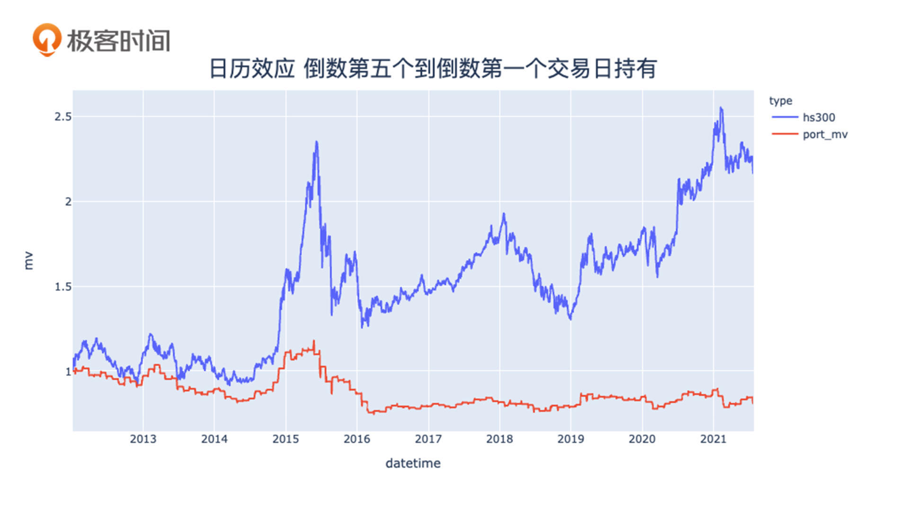
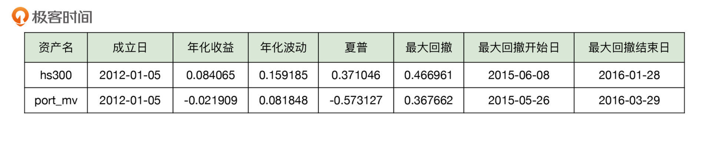
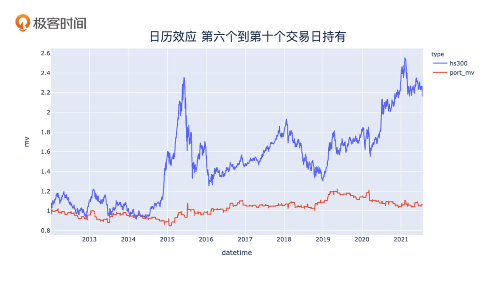
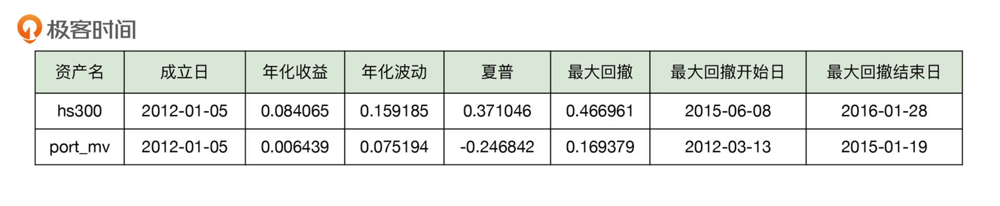

- 00 开篇词 为什么说程序员最适合学财富管理？.md.html
- 01 财富框架：建立属于你自己的财富双塔.md.html
- 02 个人发展：你自己的发展才是最大的财富源泉.md.html
- 03 理财金字塔：如何建立稳固的投资理财结构？.md.html
- 04 实战知识：有哪些收益稳健的经典资产配置组合？.md.html
- 05 支点投资法：主动投资是讲逻辑的！.md.html
- 06 不当韭菜：在财富管理的过程中摆正心态，知己知彼.md.html
- 07 职业方向：如何选择一个有前景的职业方向？.md.html
- 08 职业规划：大公司VS小公司，怎样选择更有前途？.md.html
- 09 期权股权：如何正确处理公司的期权、股权？.md.html
- 10 跳槽涨薪：如何规划一条合理的职业道路？.md.html
- 11 财富拓展：35岁失业？程序员如何拓宽财富渠道？.md.html
- 12 房产投资：如何做出理性的买房决策？.md.html
- 13 实战知识：让我们编程计算下怎么还房贷最合适.md.html
- 14 基金投资：如何让专业人士帮你赚钱？.md.html
- 15 实战知识：如何选出一只优质的基金？.md.html
- 16 股票投资：最适合散户的股票投资方法是什么？.md.html
- 17 投资闭环：如何成为越来越专业的投资者？.md.html
- 18 技术优势：程序员如何用技术超越其他投资者？.md.html
- 19 量化投资：典型的量化投资系统都包含哪些模块？.md.html
- 20 价值投资：永远不过时的中长期投资策略.md.html
- 21 趋势跟踪：怎样跟着趋势一起赚钱？.md.html
- 22 轮动策略：如何踩准市场变换的节奏？.md.html
- 23 对冲思想：这个世界上有稳赚不赔的生意吗？.md.html
- 24 多因子模型：整合不同策略，形成合力的顶层框架.md.html
- 25 机器学习：我们能用机器学习来建立投资模型吗？.md.html
- 26 量化实战：从0到1搭建起一套简单的量化投资系统（上）.md.html
- 27 量化实战：从0到1搭建起一套简单的量化投资系统（下）.md.html
- 番外一 王喆对话李腾：程序员对基金经理的灵魂十问（上）.md.html
- 番外三 有哪些能够持续学习的参考资料和相关网站？.md.html
- 番外二 王喆对话李腾：程序员对基金经理的灵魂十问（下）.md.html
- 番外四 知识总结：这门课的全部思维导图.md.html
- 答疑课堂（一） 财富框架篇、个人发展篇思考题集锦.md.html
- 答疑课堂（二） 投资实战篇、投资进阶篇思考题集锦.md.html
- 结束语 知行合一：财富管理是一生的事情.md.html
- 捐赠
18 技术优势：程序员如何用技术超越其他投资者？
你好，我是王喆。今天，我来讲一讲财富管理过程中我们程序员的一个独享优势，那就是技术优势。
其实，我在之前的课程里已经多次提到了这一点。比如，我在开篇词 中就说过，程序员作为最适合财富管理的群体，可以用编程快速验证很多问题。而在 06讲 中谈投资心态时，我提到了我们这些普通投资者的“程序员优势”，并在 16讲 中分析了如何在股票投资领域运用这个优势。
我也带着你在实战中运用了一把“程序员优势”：在 13讲中，我们编程模拟了整个还房贷的过程，这帮助我们彻底搞清了影响房贷决策的关键因素，从而做出最有利于长期财富积累的房贷决策。
其实，在财富管理中，程序员的技术优势还可以应用在其他很多方面，我想你对此应该非常感兴趣。今天这一讲，我就再系统性地梳理一下程序员的技术优势，看看我们该如何利用它超越其他投资者。
程序员的技术优势到底体现在哪？
在和程序员同行们的交流中，我发现了一个非常普遍的问题。他们经常会说：我很清楚自己有技术优势，我能编程，可以让很多事情自动化执行。但是，一提到怎么把这个优势变现，我就没有思路了，到底该怎么突破这个思维瓶颈呢？
接下来，我们就重点解决这个问题。这里我先帮你分析分析，你的技术优势到底可以体现在哪些具体的方向。
第一个方向是“高效获取信息”。
对于投资者来说，信息就是盈利的首要来源。在做出一个投资决策的时候，你收集到的相关信息越多，做出的投资决策就会越理性，越可能获得最大的收益。炒股是这样，买基金是这样，生活中所有跟财富相关的决策都是这样。等会我们就用一个买房的例子，来说明程序员应该如何高效地获取信息，来支持我们的投资决策。
第二个方向是“投资支点的验证”。
在学习支点投资法时，很多同学都有这样的疑问：怎么才能找到一个靠谱的投资支点呢？其实支点的来源有很多，比如你的观察、别人的建议，或者相关的文章。但这些支点是否靠谱，不是通过它们的来源来判断的，而是需要你对这些投资支点进行验证。
这个时候，技术优势就又可以体现出来了。我们完全可以利用程序高效地处理数据，去验证我们的投资支点，增加这个支点的可靠程度。
第三个方向是“固化规则，解放人力”。
这是什么意思呢？联系我们的日常工作想想，程序员在工作中最重要的功力就是把业务逻辑固化成代码。其实在投资中也是一样的，只有你把自己的观察和经验提炼成投资规则，建立自己的投资体系，才能稳定地盈利。
在这个过程中，程序又可以帮你解决大问题了。因为基于这些规则，建立起一个交易系统，就可以最大程度地解放你的“人力”，同时还能避免我们在 06讲 提过的人类负面情绪对交易的影响。这种让程序帮你交易的系统，就是我们经常听到的程序化交易系统，我一会也会详细介绍下。
只听知识性的总结你肯定还不太过瘾，接下来，我就用三段自己的亲身经历作为例子，来分别说明下这三个方向。
高效获取信息：通过程序收集房产信息
首先，我想跟你聊一聊如何通过程序来实现我们高效获取信息的优势。
这里举的例子是我自己一次买房前的信息搜集经历。2016年的时候，国家有比较明显的推高房地产市场的倾向，比如又开始降低房贷利率，银行推出利率打折政策，住房用地拍卖价格再创新高，等等。因此，当时我判断房地产市场可能会有新一轮的上涨行情。
基于这个支点，我决定购买一套总价较低的投资房。当然，这个投资支点的设立并不是重点，我在这里要重点讲的，是咱们程序员如何利用自己的技术来找到一套既合心意，价格又合理的房子。
决定买房后，首先是根据一定的条件，给自己划定一个选房的范围。在 12讲 中我介绍过，要买房，关键问题是确定预算。我当时的总价预算是200万到250万，这个预算范围在北京基本对应着核心区域的一居室，或者远郊的两居室。
由于要买的这套是投资房，我最看重的有三点：最重要的是租售比，也就是租金和售价的比值；二是升值潜力；三是抗跌能力。于是，我从最重要的因素租售比出发，继续划定选择范围。
为了找到北京租售比最高的地区，我在某中介服务网站上手动锁定了一些大致的热门区域，比如回龙观、望京、知春路等地区。选择它们的主要依据是，我认为这些地区互联网企业比较集中，从业人员的支付能力都比较强。
接下来就是我们程序员最擅长的事情了：利用程序来搜集信息，供我们决策。我写了一个非常简单的程序，从某网站的公开页面上，抓取了目标区域200万到250万这个区间内的在售房源和在租房源，然后计算出了这些房源的租售比。与此同时，我实现了一个监测功能：一有新的房源上线，如果价格及租售比在我规定的区间内，就马上提醒我。
除此之外，在我监测的重点区域，我还抽样抓取了几个小区的历史成交价，计算出了涨幅和波动情况。然后，我得出一个结论：城市核心区的房产在上涨周期的涨幅大于郊区，在下跌时的跌幅却小于郊区，可以说是既保值，升值潜力又大的地段。
最后，基于我用程序分析的结果，我选择了一套知春路附近、靠近地铁的一居室老破小。我选择它，是因为它的租售比非常合理，总价也在预算范围内，以及和郊区房产比起来升值潜力大、抗风险属性强。
我写这个程序大概花了一个周末的时间，然后花了一个月时间不断监测结果。现在回头看，收益无疑是非常可观的，几乎可以说，我用两天的时间创造了几十万的超额回报。在这种重大投资决策上，运用技术优势来高效获取信息，少量的时间投入往往能得到惊人的回报。
当然，要提醒你的是，利用程序去获取信息，一定要确保数据集是公开的，而且不能通过出售数据牟利，否则就有可能违反相应的法规。
验证投资支点：通过回测程序验证投资想法
第二个例子更有意思，是我通过回测程序来验证自己投资想法的经历，你且听我慢慢道来。
如果你炒股，肯定经常听说一些关于投资策略的想法，比如什么“涨停敢死队”“黄金交叉”“死亡交叉”，等等。这些想法肯定不是毫无根据的，但也不能直接拿来用。我在 06讲 就提过，对待别人的投资经验，我们要始终以拿来主义的思路去看待。这些投资想法，只有你自己严格验证过了，才能消化吸收，把它融进自己的投资体系中去。
那么在这里，程序员的技术优势就又体现出来了：我们可以利用程序，来回测和验证自己的投资想法。如果一个投资者不懂得编程，那就只能做很低效的手动分析，验证的结果还不一定可靠；或者，直接去做实盘的验证，那风险可就大多了。基于历史数据的程序回测就很好地解决了这个问题，下面我就举一个完整的通过程序回测验证投资想法的例子。
半年多前，我在和同事聊天的时候，听他们提到过一个特别简单的基于日历效应的投资策略：每个月的前五个交易日满仓沪深300指数，其他日子都空仓。他们说是特别有效。
我听了表示怀疑，每个月前五个交易日有什么特殊的吗？怎么可能这么简单就赚钱了呢？有怀疑当然就要有验证，我当天晚上就写了个程序，验证了一下这个投资想法。
首先，我准备了沪深300过去10年的每日涨跌幅数据，然后判断每个交易日是不是当月的前五个交易日，从而确定是满仓还是空仓。之后，按仓位计算这个账户每天的涨跌幅，也就是当天的仓位乘以当天的沪深300涨跌幅。最后，按这个账户的每日涨跌幅画出净值走势图，跟沪深300走势图进行比较，结果如图1和图2所示：


验证的结果是令人震惊的，这么一个简单的策略居然真的管用！和沪深300指数相比，这个日历效应策略把最大回撤从47%降到了18%，而年化收益率却从8.4%提升到了10.5%！而且更神奇的是，这个策略每个月只需要占用5天资金，其他时间你还可以把钱存到货币基金里赚利息。如果按照货币基金3%的收益率，这个组合策略的保守收益率在13%左右。所以，这是一个最大回撤只有18%，但收益率却有13%的策略，是不是有种鱼和熊掌都吃到了的感觉？
不过这只是数据验证，难免有对历史数据的过拟合之嫌。所以，当时我就带着分析结果去找李腾讨论，他看了也大吃一惊。我们就都坐下来思考：这个极简策略背后到底是什么逻辑在支撑？
后来经过讨论，我们觉得有两个可能的逻辑：一是国内银行每个月月底会归拢资金或者核账，所以导致月底钱比较紧，但下个月初又会把钱放出来，所以一般来说，月初的资金流动性比平时好；二是大多数人每月底领到工资，月初就可以定投出去了。可能是因为这两个因素，形成了一个有规律的月初买入资金流。
为了巩固我们的验证结果，我们设计了另一个测试策略：让每个月最后5个交易日满仓，其他日期空仓，测试下会是什么结果。如果我们前面猜测的两种逻辑是对的，那么我们预判，这第二个测试策略的结果应该比较差才对。
最终结果如图3和图4所示，你可以清楚地看到，改动后的日历效应策略收益率居然成了-2.2%。这个结果是符合我们的预期的，看来，月末的日历效应策略确实远远不如月初策略。


我们又继续测试了每月第6到第10个交易日满仓，其他日期空仓的结果，如下图5和图6所示。最终收益率是0.6%，虽然好于月末，但远远不如月初策略。


经过多轮验证，最终我们得出的结论是：月初日历效应策略在历史数据上的表现是非常优秀的。月中和月末的策略对比试验，也符合我们对于月末银行和散户资金流吃紧，月初流动性增强的猜想。但对于这两点假设，确实无法通过回测来完全证实。
在完全证实我们的猜想之前，这套策略还谈不上一个非常稳固的交易策略，而且我们也没有考虑其他影响收益的因素，比如交易手续费等。但是，我们至少可以得到一个行动上的指导：在我们建仓或者定投股票基金的时候，应该尽量选在每月初的前一到两天，避开月末，这样才更有可能拿到一个好的收益率。
固化规则：程序化交易
第三个体现技术优势的方向是“固化规则，解放人力”，这里面最典型的例子就是程序化交易。
程序化交易指的是用程序代替人工，实现交易流程。比如我们刚才验证的日历效应策略，需要每个月的第一天买入，每个月的第五天卖出，长此以往，还是挺麻烦的。我们自己去实现这些操作当然也是可行的，但有句话说得好，“懒惰是程序员的美德”嘛。我们当然是更希望使用程序去进行自动化的交易，这相当于雇佣了一位最认真负责的员工为我们打工，既省心又不会出错。
更何况，当策略比较复杂，或者交易频率比较高时，靠人工交易我们往往就力不从心了。这时利用程序化交易来固化策略，就可以彻底解放我们的人力，大大提高交易效率。市面上的量化交易平台已经有很多了，我这里不做具体的推荐，如果你想尝试这个领域，可以自行搜索“量化交易平台”，然后做更深入的调研。
我自己也是一个程序化交易的践行者，曾经用期货交易的交易接口CTP完成过一套完整的交易策略。在完成开发之后，我只需要在每天闭盘之后查看一下程序的运行情况就可以了。省时、省力、省心，可以让我们把有限的时间投入到更有价值的事情上，这就是程序化交易最大的优势。
如果把程序化交易与策略研发和验证结合起来，就形成了一套完整的量化投资系统。我想这也是很多程序员朋友们非常感兴趣的领域，我会邀请李腾在下一讲中做更加详细的介绍。
小结
到这里，我用三个例子，解释了程序员的技术优势到底体现在哪些方向。这里，我再总结一下这一讲的重点内容，也就是这三个例子中体现的关键思想：
- 程序员的技术优势是我们强于其他投资者的地方，一定要懂得利用。
- 高效获取信息是实现技术优势的第一个方向。典型的例子是利用程序，高效获取投资决策所需的信息，帮助我们做出最全面和理性的决策。
- 投资支点的验证是第二个方向。典型的例子是利用程序去回测我们的投资想法，在实盘交易前做充分的验证。
- 实现技术优势的第三个方向是“固化规则，解放人力”。典型的例子是程序化交易，它可以最大程度地解放我们的人力，相当于雇佣了一个认真负责的交易员给你打工。
思考题
- 对于日历效应策略，我们能不能设计一个实验，去验证市场的资金到底是不是在月末吃紧，月初流动性增强呢？可以在留言区说说你的设计思路。
- 在程序化交易那个小节，我提到了期货交易接口CTP，你可以去搜索下它的相关资料，在留言区跟大家分享。比如，CTP的全称是什么？它是由哪个机构管理的？
期待你在留言区分享自己的想法，如果这一讲的内容对你有帮助，也欢迎分享给身边的朋友，我们下一讲见。
© 2019 - 2023 Liangliang Lee. Powered by gin and hexo-theme-book.